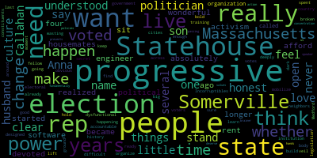

[Callahan]: Some people say that I'm a little too honest to be a politician. But I've never understood why you wouldn't want to be clear about what you think and what you feel. And it's one of the things that I love the most about the culture here. People are really open about what they think and what they stand for. My name's Anna Callahan. I live in Somerville. I've been here since 2003. I live with my husband and my son and several absolutely wonderful housemates. Because really, who could afford the rent here? I was a software engineer until four years ago, when I realized that I just could not sit by any longer, and I became devoted to political activism. I started an organization called The Incorruptibles, and through that I have spent the last few years training people in cities across the country to really build progressive electoral power from the ground up. The Massachusetts Statehouse is not a very progressive body. And the more you learn about it, the more it is obvious that it is a dysfunctional and deeply broken institution. It is very difficult to find out what is happening at the Statehouse. And it's designed to keep voters in the dark. I want to mobilize the people of Medford and Somerville. I want to lift the veil off of the statehouse so that my neighbors can hold me and my fellow state reps accountable. Our state rep has voted again and again to make sure that that doesn't happen, and it is wasting our time. We are in a moment in history when big changes are going to happen. We need a statehouse that is ready to make bold, progressive change. This election is about good government. This election is about whether our state rep's votes are secret. This election is about whether we as constituents have enough time to organize around legislation before it's already been voted on. And fundamentally, this election is about the concentration of power in the hands of the speaker that prevents us from passing the no-brainer progressive policies that the people of Massachusetts want, need, and deserve. We all have progressive values here. We need progressive action.
|
total time: 2.1 minutes total words: 370  |
|||
{kind=link}